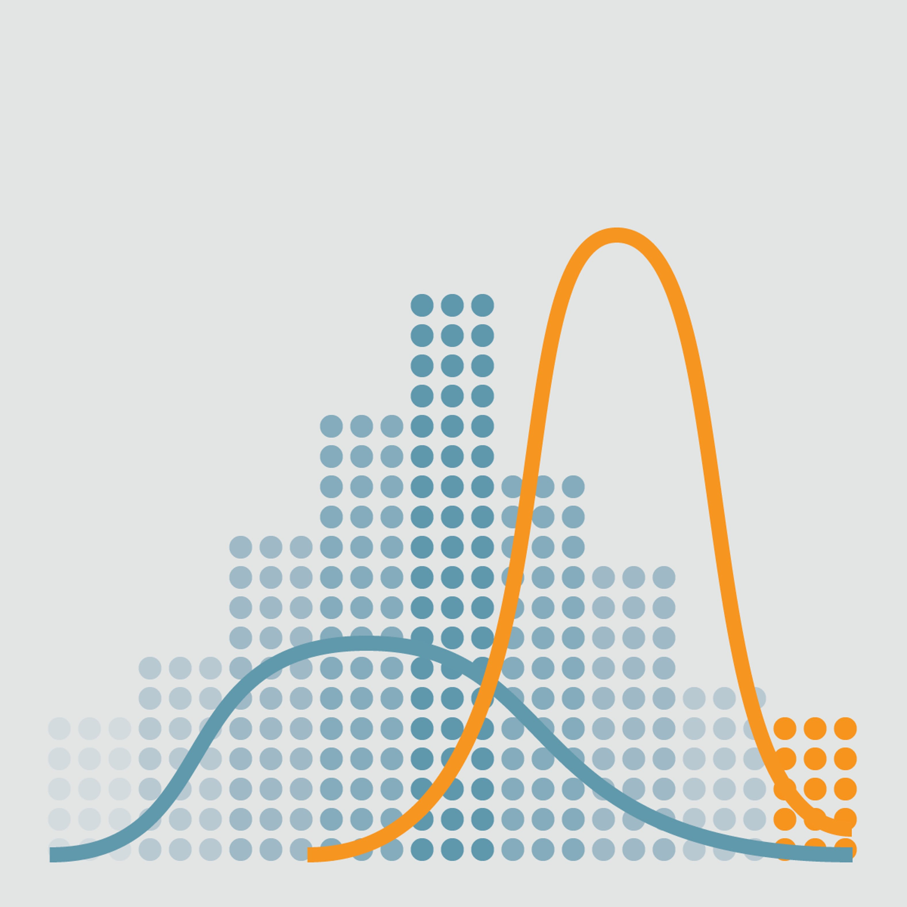
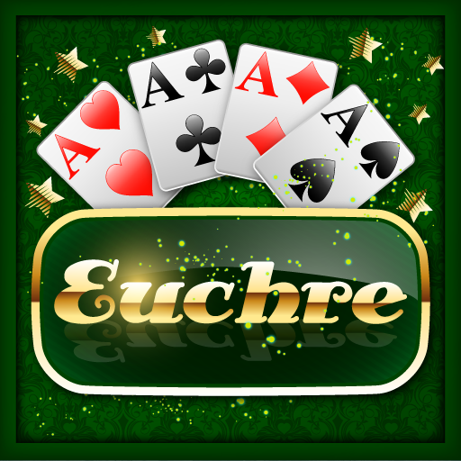

EECS 280: Programming and Introductory Data Structures
Techniques and algorithm development and effective programming, top-down analysis, structured programming, testing, and program correctness. Program language syntax and static and runtime semantics. Scope, procedure instantiation, recursion, abstract data types, and parameter passing methods. Structured data types, pointers, linked data structures, stacks, queues, arrays, records, and trees.
Project 1:Statistics
This program reads in a filename of numerical data and then provides a statistical summary. The main goal for this project was being comfortable working with vectors and also with reading in files. This class also had a more strict testing policy, so my test cases for this project were more thorough in catching bugs and testing edge cases. This was also the first project where I wrote my test cases before I defined most of my functions.
Project 2:Computer Vision
In this project I implemented parts of the seam carving algorithm to support content-aware image resizing. Implementing this project provides an opportunity to work with pointers, arrays, structs, strings, and basic I/O operations, as well as C-style “object-based” programming.
Project 3:Euchre
In this project, we wrote a simulator for a game of Euchre both with multiple players or with a single player. In the single player mode, a user plays with a preprogrammed computer player that has been set to play the game a certain way. In the multi-player mode, up to four users can play, and if there are less than four users playing then the remaining players will be the computer programmed players. Completing this project gave me experience with abstract data types, object-oriented programming, and polymorphism.
Project 4: Linked Lists
 This project introduced me to basic linked lists and stacks as well as the various functions that are associated with them. We also learned about the big three and how they fit in when we work on projects. We had to manage memory allocation so that there were no memory leaks. Our driver ended up reading in user inputted data or data from a file containing instructions in reverse polish notation and then calculated what the result would be.
This project introduced me to basic linked lists and stacks as well as the various functions that are associated with them. We also learned about the big three and how they fit in when we work on projects. We had to manage memory allocation so that there were no memory leaks. Our driver ended up reading in user inputted data or data from a file containing instructions in reverse polish notation and then calculated what the result would be.
Project 5: Machine Learning
In this project, I wrote an intelligent program that uses natural language processing and machine learning techniques to automatically classify Piazza posts according to topic. I gained experience with recursion, binary trees, templates, sorting/searching algorithms, comparators, and the map data structure.